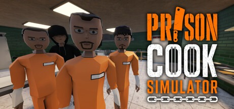
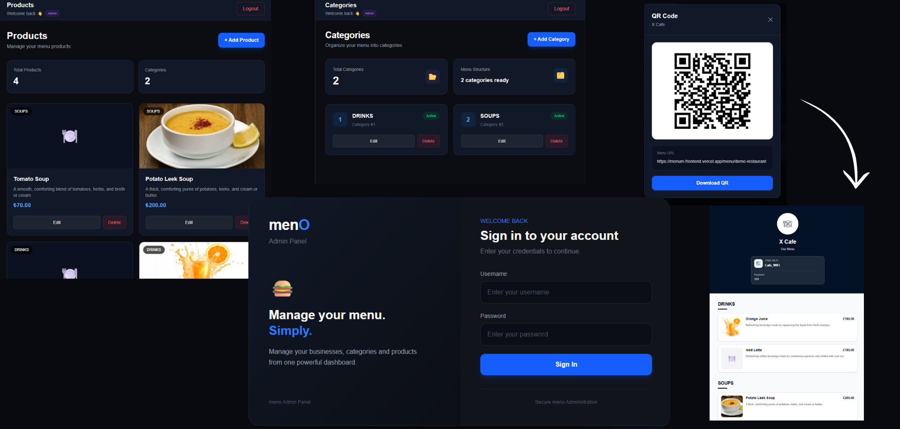
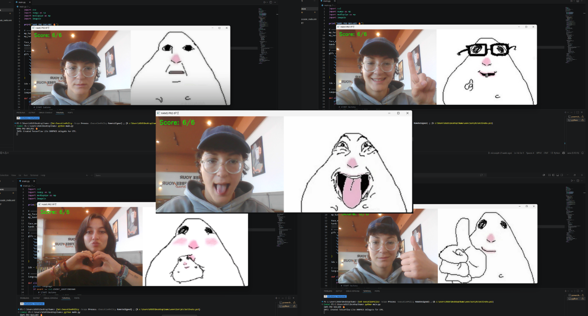
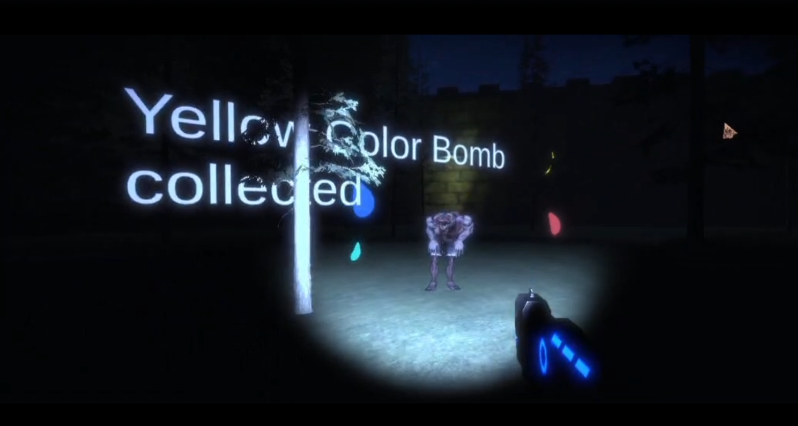
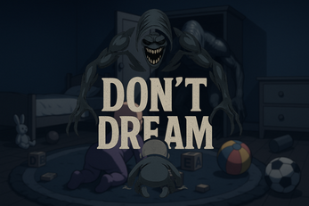
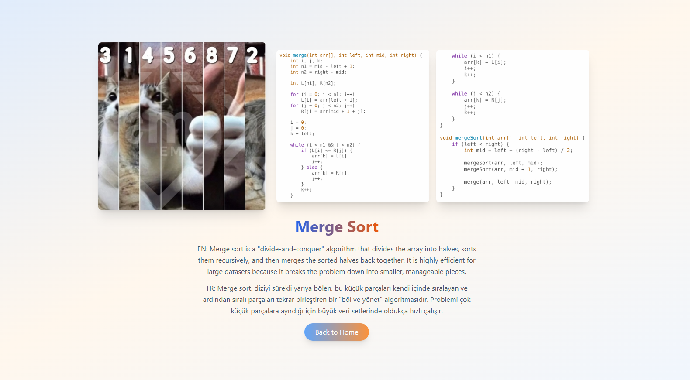

Discover the software, games, and tech solutions developed by our talented ACM Student Chapter members.

Prison Cook Simulator is a first-person simulation and stealth game developed by a three-person team in just 1.5 months, putting players in the role of a cook working inside a prison. While preparing and delivering meals as part of their daily routine, players can also take on secret tasks from prisoners, including smuggling, poisoning, delivering messages, and sabotage. However, guards, security cameras, and unexpected inspections from the prison warden create a constant risk of getting caught. Players must keep their suspicion level low, earn money through illegal jobs, buy black market items, and travel between different locations while working toward their freedom. With stealth, strategy, and decision-making taking priority over weapons and combat, the game launched into Early Access on Steam on August 31, 2026, and will continue to evolve based on community feedback.

menO is a multi-tenant scalable SaaS platform that helps restaurants create and manage digital QR menus. Each business gets its own customizable menu and admin panel, allowing restaurant owners to easily manage categories, products, prices, and menu content from a single place.The platform is designed to make digital menu management simple, fast, and accessible for businesses of different sizes. Customers can access a restaurant's menu directly by scanning its QR code, without needing to download an app or create an account.
Key features that menO includes: Role-based authentication, Category and product management, Customizable menu appearance, Multi-tenant business management, Cloud-based deployment, Database management and QR-based digital menus.
Find Mimics is an interactive application developed in Python that utilizes real-time image processing and computer vision technologies. Using OpenCV and MediaPipe, the system analyzes the user's facial expressions and hand gestures in real time to detect different mimics. The detected actions are matched with hamster animations, while a scoring system encourages users to discover various expressions and gestures. The project combines computer vision and gesture recognition technologies with an engaging and interactive user experience.

Winning 3rd place at the Game Jam organized by the EMU Game Design Club is a fantastic milestone achieved by our 3-member EMU ACM team! The project, titled 'Save the Spring Fest', features a hilarious and absurd storyline where university teachers and assistants turn into zombies but still manage to inflict intense exam stress and quiz pressure on students. Players control Nickyy Menaj, who must defeat these unstoppable, quiz-loving zombies by making them dance to her music while collecting color bombs to enhance the festival vibes. Built during an intense marathon, our first game includes custom funny dialogue and three action combos: Shift+F for flashlight, Shift+W for dash, and Right Click + Left Click for shooting. It was an incredibly fun experience that allowed our team to gain valuable skills and bring home a well-deserved trophy!

Built in less than 48 hours for the Hack & Play: World Jam, 'Don't Dream' is the latest project from our members. It is a fast-paced survival horror game where players step into the shoes of a toddler trapped in a room with a terrifying closet monster. The gameplay features a tense cycle: you have just 30 seconds each morning to scramble and collect 20 randomly scattered items before the night begins and the creature emerges. Created entirely with Unity, the game offers a first-person toddler perspective, endless nights with scaling difficulty, and unique mechanics where every collected toy or object acts as a one-time-use weapon—making it a thrilling sprint that tested our team's core dev skills!

We built a web-based Sorting Game that serves as a dynamic algorithm visualizer. Using custom media and interactive mechanics, it gamifies core computer science concepts while sharpening our front-end development skills.